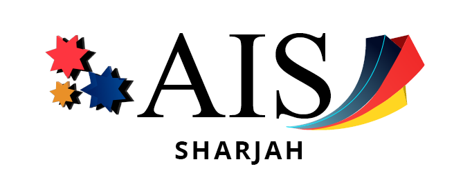
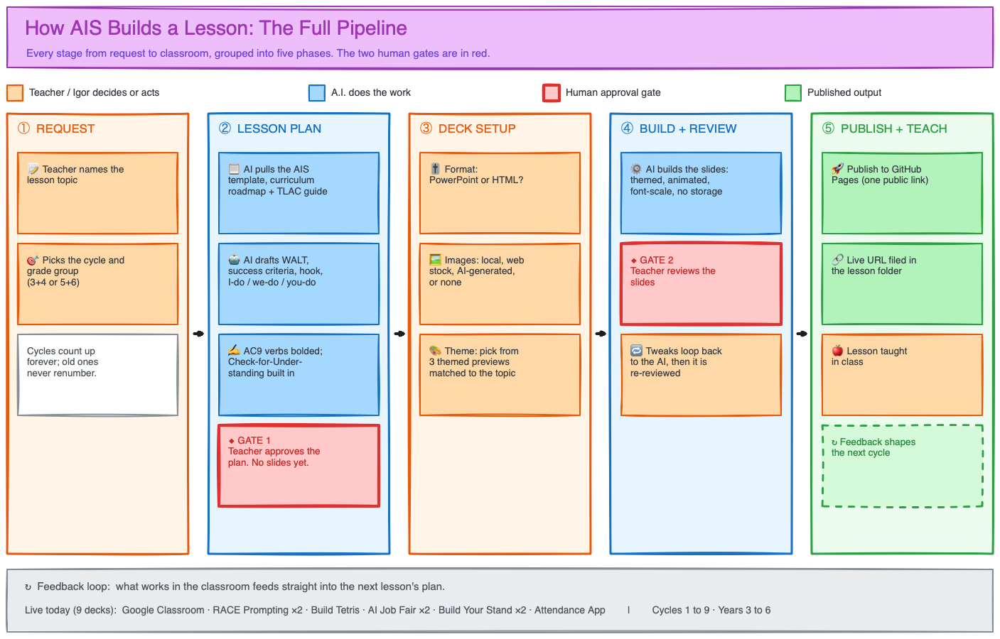

Executive Briefing · July 2026
Executive Briefing · July 2026
AI and Development
at AIS
A year of building data-driven, teacher-first systems across the school, and where they go next.

00OverviewCurrent Projects.
R3 Lesson Observations
Capture, analyse and coach teaching quality for the 2027 review.
Academic Reports
Parent-facing reports with login and finance built in.
IRL / TRS Automation
Daily teacher-cover allocation, fully automated.
Feedback and Attendance
Authentic teacher feedback and attendance at a glance.
Lesson and Slide AI
Turning our teaching craft into ready-to-teach lessons.
Built this year. Shared infrastructure. Tracked against clear KPIs.
The R3 Observation Form. Where it all starts.
- Observers make observations
- Make a judgement
- Write notes
- All in one handy place
- The data is collated in three places
- Emailed to the person who observed the lesson
- Saved in Supabase (database)
- Saved in Google Sheets as a backup
We don't just collect data. We use it.
- Snapshot: Story vs DetailReferences on every claim, then explain the benefit
- Report: Simple vs In-depthReferences, then explain the benefit
- Teacher Observation page
- Teacher Coaching/Training · Data-Driven
- Reads all notes: observer notes, strengths, weaknesses
- Writes a summary
- Places the teacher on the judgement scale
- Reads the rubric: where they are, where to go next
- Coaching references (Dave and the HODs, 5 per rubric field)
- The observer approves, sends it, and has the conversation
- Claire Gadsby and other resources included
We're not collecting data, we're improving teachers.
What's next for the R3 Dashboard.
- Teacher Dashboard/PortalThe 8-point per-teacher view (possible before tomorrow)
- OTP and APR lesson observations
- Apple Pencil notes used as AI context
- Role-based logins: teacher, observer, administrator
- Manipulate by observer, by date, by trendNeeds one more round of R3 observations
Reports parents log in to, with finance built in.
- A full PRD is written
- Parent login
- Every report archived to Google Drive
- Finance-gateUnpaid fees see page one only, then a prompt to visit the Finance Department to unlock the rest
- Built on the principal-approved AIS templateModelled on Aaira's Grade 6 report
One daily email. Zero cover confusion.
Automating cover exposed a data problem.
To put cover on the right calendars, every teacher record had to be correct. It wasn't.
Durable fixes are being routed back to source with Pic, Boyd and IT. The clean data, not just the automation, is the win.
The teacher's feedback, not a generic AI's.
- The problemTools like Brisk and Chalkie auto-write student feedback
- Parents want the teacher's own expertiseNot a watered-down, generic version
- Unchecked AI errors reach the child
- This app keeps the teacher as the authorThey record real feedback in their own voice, screen or video
- Students replay it anytime, until they understand
- Dave and I: our top priority after the dashboard and reports
Attendance at a glance, emails that write themselves.
- See attendance from school level down to each student
- Ask questions in plain EnglishAn AI panel answers from the data
- Parent emails drafted automatically
- Next: backend moves to Leon's Main Database
- Next: restyle to match the dashboard
- Next: email automation retires the $20/month toolGrade 1 first, then the rest
How AIS builds a lesson: the full pipeline.
Curriculum to classroom, with a teacher approval gate in the middle.

Our craft, turned into ready-to-teach lessons.
- Reads the 63 TLAC techniques we adopted
- Our lesson elements and structure
- AC9 cognitive verbs and ACARA
- Vertical alignment, and what came before and next
- Drafts the full lesson plan
- Teacher reviews, edits and approvesThe gate, no slides without it
- Generates the deck, HTML or PowerPoint
- Nine lessons already live in classrooms
It's not seven projects. It's one system.
Every workstream shares the same foundations: Supabase, Google Workspace, AI and a common design language. Drag a node, zoom in, follow the links.
A home for the work, and a title that matches it.
- Designed, built and shipped six systems, now live across AIS, from the R3 dashboard to automated cover and AI-generated lessons
- One platform, one goal: turning the school's data into better teaching
- 6 systems live across the school
- 109 June lessons analysed in R3
- 9 AI lessons in classrooms
- 1 connected platform
Head of AI and Development
- Owns AIS's AI strategy and internal software, end to end
- Designs, builds, deploys and maintains the stack
- One point of accountability for data to decisions